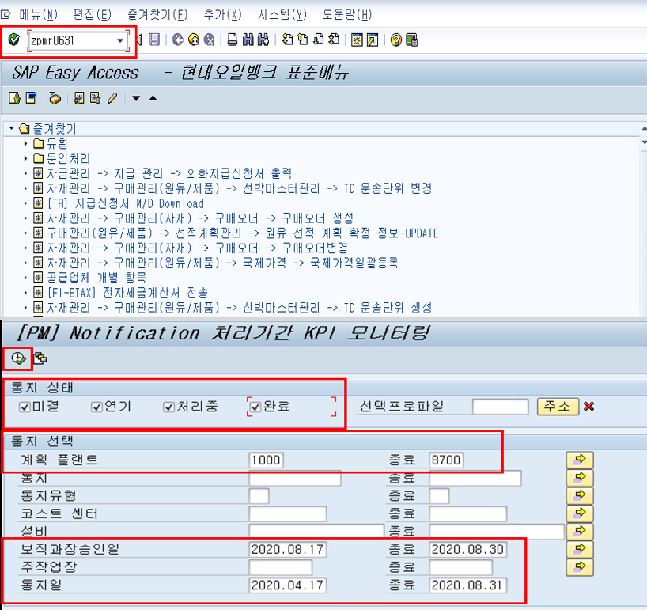
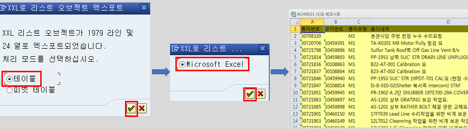
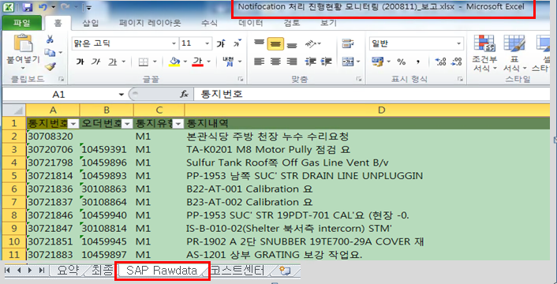
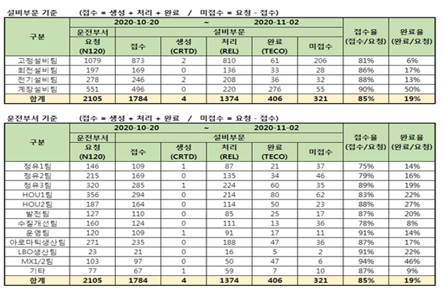
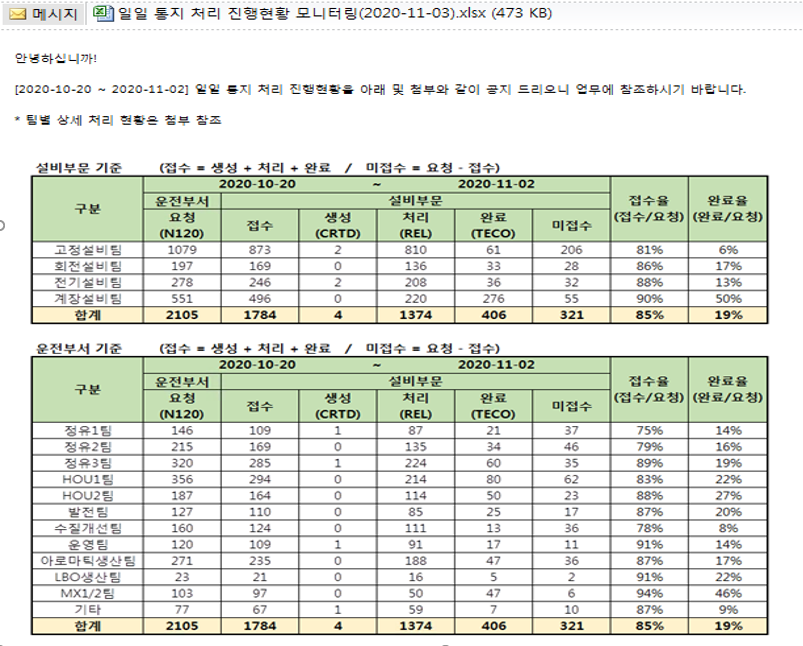

RPA TASK 일일통지 진행현황 모니터링
2020-11-03
Chapter 1 Introduction
일일통지 진행현황 모니터링은 SAP에서 Excel data를 조회, 추출, 가공한 뒤, Template 파일에 적용하여 담당자에게 메일로 보내는 자동화업무이다. 본 업무의 flow를 아래에 간략히 소개하도록한다.
1.1 Task Flow
1.1.1 Data 조회

Figure.1 SAP T-code 입력 / Data 조회
SAP에 로그인 --> T-code 입력 --> 속성값 입력 뒤 data 조회
1.1.2 Data 추출

Figure.2 Data export
조회한 데이터를 Excel 파일로 저장
1.1.3 Template 파일에 복사

Figure.3 Data Copy
SAP에서 다운받은 Excel data를 고객이 미리 준비한 Template 파일에 적절한 형식으로 Mapping
1.1.4 요약 sheet 내용을 PNG 파일로 저장

Figure.4 Table 캡처 및 저장
Template 파일로의 Data mapping이 완료되면, 요약 sheet의 내용이 자동변경
요약 sheet의 Table을 캡처하여 PNG 파일로 저장
1.1.5 업무결과 메일전송

Figure.5 파일 첨부 및 메일전송
업데이트한 Template 파일 첨부 및 본문 작성 / 본문에 저장했던 PNG 파일 붙임